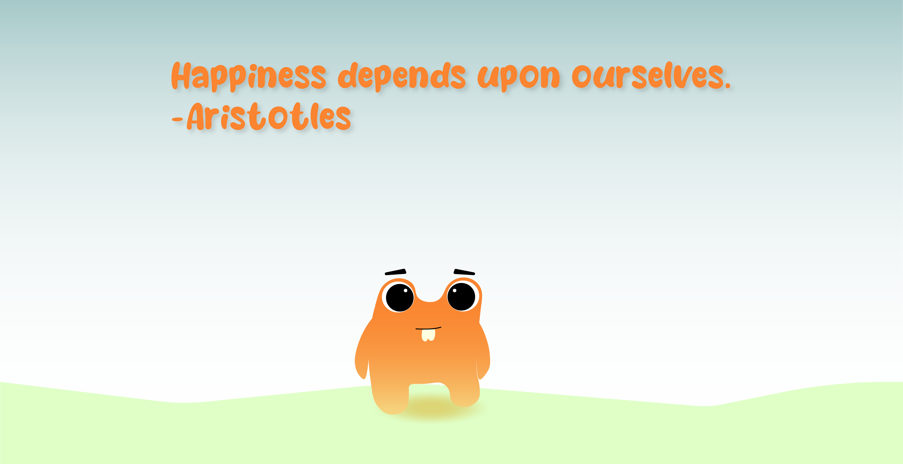
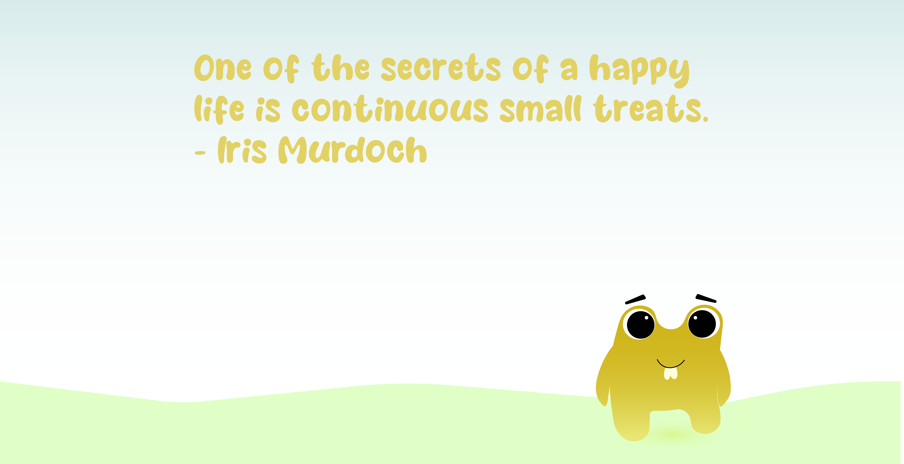

<!DOCTYPE html>
<html lang="en">

  <head>
    <meta charset="UTF-8" />
    <meta name="viewport" content="width=device-width, initial-scale=1.0" />
    
    <link rel="stylesheet" type="text/css" href="style.css">
    <link rel="preconnect" href="https://fonts.googleapis.com">
    <link rel="preconnect" href="https://fonts.gstatic.com" crossorigin>
    <link href="https://fonts.googleapis.com/css2?family=Righteous&display=swap" rel="stylesheet">

    <!-- <script defer src="motion/MotionDetector.js"></script>    -->  

    <script type="module" src="/main.js"></script>

    <title>Happy Room</title>
  </head>

  <body>
    <!--  Opdracht 1: lachen maakt gelukkig.           
    <h1>Luister en zeg na.</h1>
    <div id="opdrachten"></div>  
-->  
    <!--  Opdracht 2: natuur maakt gelukkig.     
    <div class="swiper">
      <div class="swiper-wrapper">
        <div class="swiper-slide"></div>
        <div class="swiper-slide"></div>
        <div class="swiper-slide"></div>
        <div class="swiper-slide"></div>
      </div>
    </div>
-->  

    <!--  Opdracht 3: bewegen maakt gelukkig.   
    <video autoplay muted>
      <source src="images/video.mp4" type="video/mp4">
    </video>
--> 
  

   <!--  Opdracht 4: Springen maakt gelukkig.   
<div class="line"></div>
-->

  <!--  face detection      
    <video width="720" height="560" autoplay muted></video>
-->  

  <!--  quotes  
    <h1 id="20happy">The only joy in the world is to begin. — Cesare Pavese </h1>
    

    <h1 id="40happy">Remember this, that very little is needed to make a happy life. — Marcus Aurelius</h1>
    

    <h1 id="60happy">Happiness depends upon ourselves. — Aristotle</h1>
    

    <h1 id="80happy">One of the secrets of a happy life is continuous small treats. — Iris Murdoch</h1>
    

    <h1 id="100happy">I wake up every morning with a great desire to live joyfully. — Anna Howard Shaw</h1>
    

  -->

  <!--  motion detection (https://github.com/jasonmayes/JS-Motion-Detection.git)
  <video id="camStream"></video>
  <canvas id="canvas"></canvas>
  <canvas id="canvasFinal"></canvas>
  <script type="text/javascript" src="js/MotionDetector.js"></script>
  --> 

  </body>

</html>
